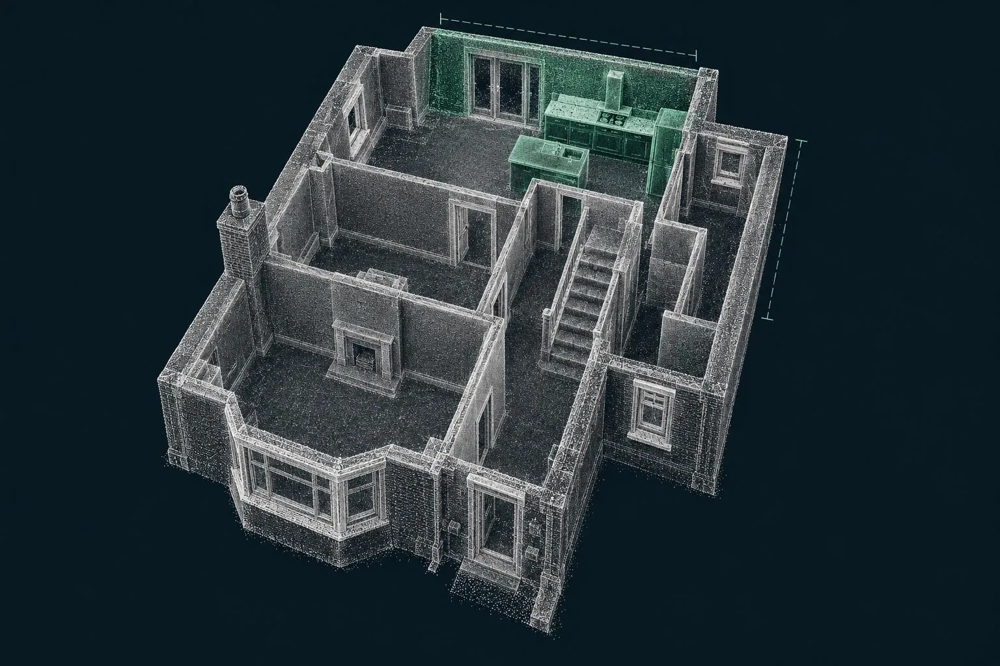

Cost guide
Measured building survey cost
Guide prices for laser scan surveys of rooms, houses and elevations, from a single kitchen to a full set of existing drawings.

Guide price: a 3D measured building survey costs from £325 for a single room or kitchen, from £695 for floor plans of a typical three-bed house, and from £995 for floor plans plus external elevations. Every survey includes the point cloud. Before VAT, travel included within 30 miles of Corby.
| Survey | Guide price | Deliverables |
|---|---|---|
| Single room or kitchen | from £325 | Floor plan, wall elevations of the room, point cloud |
| Rear of house for an extension | from £495 | Ground floor plan of affected rooms, rear elevation, ground levels, point cloud |
| Whole house floor plans (3-bed) | from £695 | Plans of every floor, room heights, point cloud |
| Floor plans and elevations (3-bed) | from £995 | All floors and all external elevations, point cloud |
| Point cloud only | from £395 | Registered scan data for your own drafting, half-day on site |
| 360° walkthrough | + £75 | Browser-based tour from the scan positions |
Guide prices before VAT. Larger, older or more complex buildings are quoted individually.
What changes the price
Number of rooms, not floor area
The scanner needs line of sight, so each room, landing and stair needs its own set-up. A house of many small rooms takes longer than an open-plan one of the same size.
Drawings required
Plans take less drawing time than elevations; sections and detailed elevations take more. A point cloud alone needs no drawing at all, which is why it's the cheapest option for designers who draft their own.
Furniture and clutter
The scan sees what's there. Full rooms are fine for kitchens and extensions, but if you need every wall surface, an empty or tidy room scans faster.
How our prices compare
Published UK prices for a measured survey of a three-bed house run around £800 for floor plans in London and £1,100 with external elevations (for example, Bidston Draughting's published price list, checked October 2026). Ours sit at or below that and always include the point cloud.
Worked example: a kitchen-diner
A stripped-back 1930s kitchen-diner ready for a new kitchen. Under an hour on site, plan and four wall elevations plus point cloud for the kitchen designer within three working days. £325.
Included on every survey
- Survey-grade laser scan
- Scaled drawings, PDF and DWG
- Registered point cloud
- Room heights and floor levels
- Drawings in 3–5 working days
How it works: 3D measured building surveys. All services: price guide.
Measured surveys across the area
Questions we get asked
How much does a measured building survey cost for a house?
For a typical three-bedroom house, floor plans of every floor start from £695, and floor plans with external elevations from £995. A single room or kitchen starts from £325. Prices include the point cloud.
Why is a laser scan survey worth paying for over measuring myself?
Because getting it wrong costs more. A kitchen designed on hand measurements that miss an out-of-square wall needs filler panels or reordered units. An extension drawn from a quick tape-round can get the floor level or eaves height wrong. The scan captures everything once, accurately, and you keep it.
Is the point cloud included?
Yes, on every measured survey, in E57, RCP or LAS, so your designer or architect can check any dimension later without another visit.
How does your price compare with other surveyors?
Published UK prices for a measured survey of a three-bed house commonly run from around £800 for floor plans (a London price) to £1,100 or more with elevations. Our guide prices sit at or below that and include the point cloud.
Book a scan or ask a question
Send the drawing, the location and when you need it. We reply the same working day with a fixed price.